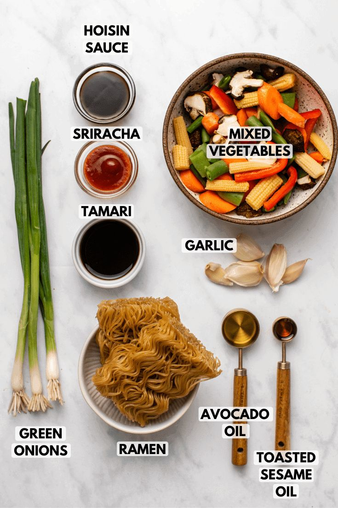

Home
Tacos
Lasagna
Chowmein
Biryani
Ramen
Ramen (/ˈrɑːmən/) (拉麺, ラーメン or らあめん, rāmen, [ɾaꜜːmeɴ] ⓘ) is a Japanese noodle dish. It consists of Chinese-style wheat noodles (中華麺, chūkamen) served in a broth; common flavors are soy sauce and miso, with typical toppings including sliced pork (chāshū), nori (dried seaweed), menma (bamboo shoots), and scallions. Ramen has its roots in Chinese noodle dishes and is a part of Japanese Chinese cuisine.
Nearly every region in Japan has its own variation of ramen, such as the tonkotsu (pork bone broth) ramen of Kyushu and the miso ramen of Hokkaido.

Ingredients:
2 large eggs
1 tablespoon olive oil
4 cloves garlic, minced
1 tablespoon freshly grated ginger
4 cups reduced sodium chicken broth
4 ounces shiitake mushrooms
1 tablespoon reduced sodium soy sauce
3 (5.6-ounce) packages refrigerated Yaki-Soba, seasoning sauce packets discarded
3 cups baby spinach
8 slices Narutomaki, optional
1 carrot, grated
2 green onions, thinly sliced

Instructions:
1.Place eggs in a large saucepan and cover with cold water by 1 inch. Bring to a boil and cook for 1 minute.
2.Cover eggs with a tight-fitting lid and remove from heat; set aside for 8-10 minutes.
3.Drain well and let cool before peeling and halving.
4.Heat olive oil in a large stockpot or Dutch oven over medium heat.
5.Add garlic and ginger, and cook, stirring frequently, until fragrant, about 1-2 minutes.
6.Whisk in chicken broth, mushrooms, soy sauce and 3 cups water.
7.Bring to a boil; reduce heat and simmer until mushrooms have softened, about 10 minutes.
8.Stir in Yaki-Soba until loosened and cooked through, about 2-3 minutes.
9.Stir in spinach, Narutomaki, carrot and green onions until the spinach begins to wilt, about 2 minutes.
10.Serve immediately, garnished with eggs.